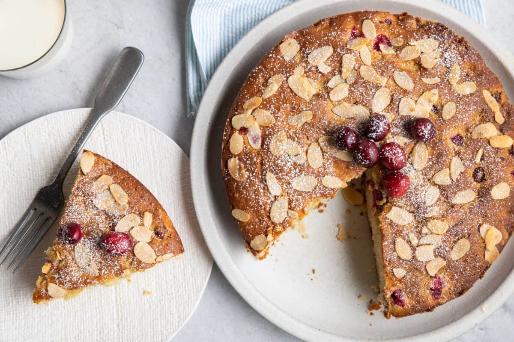

Cranberry Cake
This cranberry pound cake recipe is the perfect dessert for your holiday gathering. It is festive, delicious, and easy to make. The orange zest gives it a wonderful pop of citrus flavor, and the fresh cranberries add a touch of tartness that balances out the sweetness of the cake. In this recipe, the cranberry cake was topped with sliced almonds and a dusting of powdered sugar, but you can get creative and top it with whatever you like. This recipe is great with a cup of hot coffee or tea or an ice-cold glass of milk. Whatever you serve this cranberry almond cake with, it is sure to be a crowd-pleaser!
PREP. TIME: 15 min. | COOK TIME: 45 min. | SERVINGS: 8 slices

FINAL STEP: Sprinkle powdered sugar on top and you're ready to serve!
To store your cranberry pound cake, let it cool completely before transferring to an airtight container. This will help prevent the cake from drying out or becoming stale. You can keep your cake at room temperature for up to 3 days, or in the fridge for a longer shelf life. To reheat your cranberry cake, preheat the oven to 350°F. then, place the cake on a baking sheet and pop it into the oven for 5-10 minutes, or until warm throughout. Alternatively, you can reheat individual slices in the microwave on medium power for 30-60 seconds, depending on the desired level of warmth. Be sure to check that your cake is not getting too hot or drying out, as you do not want to damage the delicate sponge.
Yes, use ¾ cup of milk in place of the 1 cup of Greek yogurt in this recipe.
The shelf life of your cranberry cake will depend on a few factors, such as the storage conditions and if you let it cool completely. In general, properly stored cakes should last in the fridge for up to 5-7 days.
Yes, you can freeze cranberry pound cake. To do so, let the cake cool completely and then slice it into individual servings. Place the slices on a baking sheet in the freezer until they are firm. Then, transfer them to an airtight container or freezer bag and store them for up to 3 months. When ready to serve, let the cake thaw at room temperature for a few hours, or place it in the fridge overnight. Alternatively, you can freeze it whole. To do so, wrap the cake tightly in several layers of plastic wrap and place it in an airtight container. You can store your whole cranberry pound cake in the freezer for up to 3 months. When ready to eat, let it thaw at room temperature before slicing and serving.
N.B. Nutrition information provided is an estimate. It will vary based on cooking method and specific ingredients used.